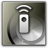

Important: In order for Cascable to connect to your WiFi-enabled Sony camera, you need to install/use the

Smart Remote Control
app on your camera.
To get Sony's Smart Remote Control app installed on your camera and talking to Cascable there's few steps that you need to undertake, this guide will help you through them.
Summary
- Check that your camera's firmware is up-to-date.
- Ensure that the Smart Remote Control app is installed on your camera and is up-to-date.
- Check that Cascable is up-to-date.
Check That Your Camera's Firmware is Up-To-Date
Before connecting your camera to Cascable, check that your camera's firmware is up-to-date.
You can check the version of firmware that your camera is running by selecting Version from your camera's  Toolbox menu.
Toolbox menu.
Head over to Sony's Support Pages and follow the links to your camera's model to download the latest firmware.
Installing Smart Remote Control
Note: You will need a Sony Account to download Sony PlayMemories Camera Apps.
In order for Cascable to talk to your camera, you need to install Sony's Smart Remote Control app onto your camera.
- Press the Menu button on your camera and navigate to
 Apps > Application List > PlayMemories Camera Apps.
Apps > Application List > PlayMemories Camera Apps.
- Your camera will search for a WiFi network; if it is not already connected, you'll be prompted to connect to a wireless access point.
- Once PlayMemories Camera Apps opens, find and install the Smart Remote Control app.
Check That Smart Remote Control is Up-To-Date
If you already have Sony's Smart Remote Control app installed, you should check that it's up-to-date.
- Press the Menu button on your camera and navigate to Apps > Application List > PlayMemories Camera Apps.
- Your camera will search for a WiFi network; if it is not already connected, you'll be prompted to connect to a wireless access point.
- Once PlayMemories Camera Apps opens, navigate to the My APP tab, select the Smart Remote Control app and that the latest version is installed.
Connecting Cascable to Your Camera
- Press the Menu button on your camera and navigate to Apps > Application List >
 Smart Remote Control.
Smart Remote Control.
- Once Smart Remote Control has launched, press the Delete button to Connect with a password.
- On your iOS device, open Settings and navigate to Wi-Fi, select the wireless SSID and enter the password that's display on your camera's screen.
- Your camera's screen will display Connecting....
- Launch Cascable on your iOS device, it should automatically detect and connect to your camera
Still Stuck?
If you're still stuck, head over to the Cascable Website and we'll help you out.